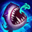

R - 미끼 뿌리기(Chum the waters)
피즈가 녹색의 물고기를 던져서 물고기가 적 챔피언에게 붙거나 땅에 떨어지면 2초 후 상어가 올라와 주변 적을 공중에 띄우고 높은 마법 피해를 가한다. 강력한 범위 피해와 범위 CC기 효과가 동시에 달린 스킬. 강력한 누킹 능력을 보여주며, 한타 때 뭉쳐있는 상대에게 제대로 꽂히면 거의 재앙급 효율을 낼 수 있다.
사정거리도 상당히 길고 쿨다운도 짧아서 써먹기 좋다.다만 탄속이 조금 느린 편이고 경로에 조우하는 최초의 챔피언에게 달라붙기 때문에 이 기술을 최적의 위치에 날리기 위해서는 어느 정도의 요령이 필요하다. 사정거리가 꽤 길기 때문에 아군에 마땅한 이니시에이터가 없다면 이니시에이팅 용도로도 사용할 수는 있다. 하지만 제대로 맞히지 못했을 경우에 손해가 막심하기 때문에 적들이 완전히 뭉쳐있지 않은 한 이니시에이팅의 용도로 쓰기 보다는 한타가 벌어진 후 진형이 흐트러졌을 때 원딜이나 누커를 목표로 쓰는 편이 효율적이다. 같은편 원딜이 잘 성장했다면, 원딜을 지키기 위해 궁을 사용해도 좋은 효과를 볼 수 있다.
미끼에 물리면 점멸이나 이동기를 백날 써도 상어가 따라오지만, 상어가 나오는 타이밍에 정확히 맞춰서 쓰면 피할 수 있긴 하다. 단 한타 때는 일단 그런 컨트롤을 하기엔 정신도 없고 상대 CC기 때문에 피할 수조차 없을 수도 있을 뿐더러 내가 피해도 어차피 주변의 아군들은 상어에 맞게 되기 때문에 거의 불가능한 테크닉. 다만 점멸과 비슷한 능력을 스킬로 가진 챔피언들은 컨트롤과 상황이 따라줄 경우 상어를 피할 수 있는 것 또한 사실이니만큼 상대의 실력과 스킬 사용 가능 여부 등을 체크하고 사용할 필요가 있다. 특히 같은 피즈는 장난치기로 몹시 손쉽게 씹어버린다. 또한 무적기를 보유한 케일 등이나 존야를 보유한 챔피언도 손쉽게 궁을 피할 수 있다. 피즈는 궁극기가 딜링에 큰 부분을 차지하기 때문에 이런 챔피언들을 상대하기 까다로운 편이다.
전방으로 투사체를 날리는 스킬이기 때문에 적에게 근접할수록 당연히 더 맞히기 쉬워진다. Q나 E 등으로 상대와의 거리를 좁힌 다음 사용하는 것이 기본. 특히 성게 찌르기의 경우 돌진하는 도중에 미끼 뿌리기를 사용할 수가 있기 때문에 기습적으로 사용하면 상위 티어라도 반응하기 어렵다.